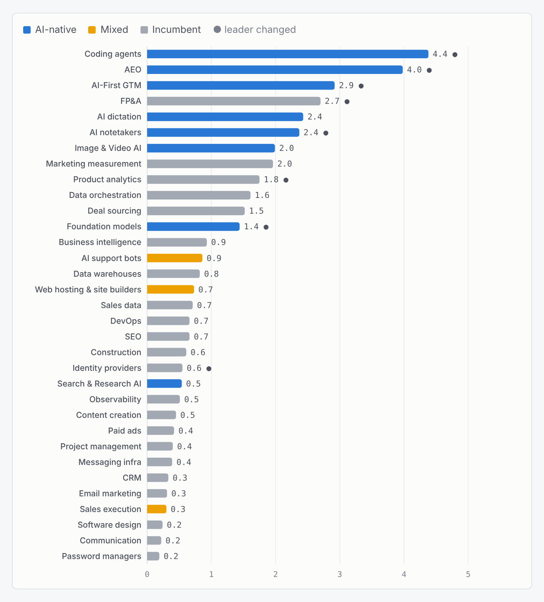
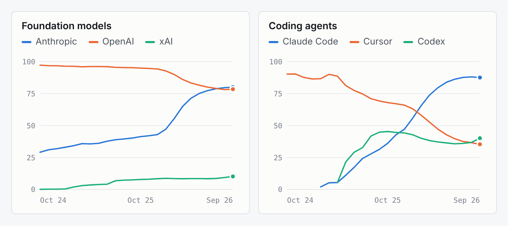
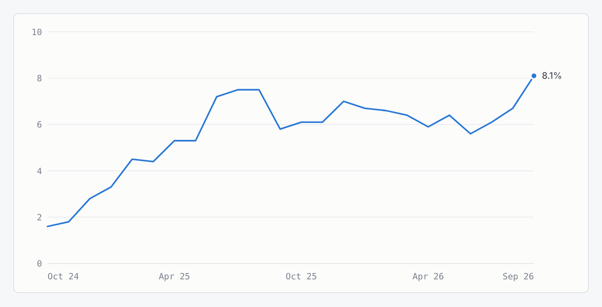
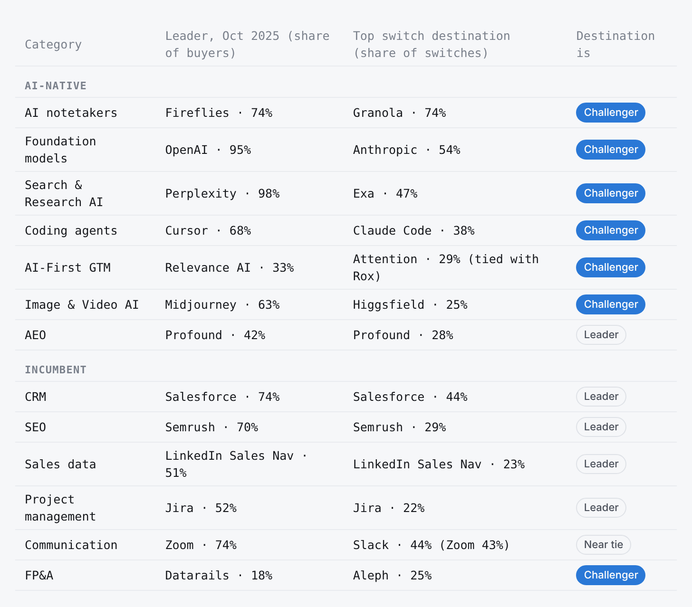

Stack, Don't Swap
Intuitively, having many companies in a burgeoning space means lots of competition, which eventually gets settled when enough firms find a product they like, sign a contract for it, and move on. Using the Ramp Rate vendor directory, we find that AI-native categories churn about 4x faster than incumbent categories. Companies also tend to stack software within categories: at least 58% of foundation-model buyers pay for both Anthropic and OpenAI, and coding agents went from 1.16 to 1.72 vendors per buyer. Lastly, AI software buyers tend to switch to challengers within product categories, while buyers of incumbent software flock to the leaders.
Method notes
The dataset includes 33/38 categories from Ramp Rate, sorted by AI-native (8, categories that exist because of generative AI), Incumbent (22), and Mixed (3: AI Support, Web Hosting & Site Builders, Sales Execution, where AI startups compete with established vendors). This set does not include the 5 AI infrastructure categories (Model Serving & Inference, etc.). Model-provider switching figures come from Ramp’s “Businesses are changing AI model providers more often” report, published October 6th, 2026.
Adoption is a vendor’s share of a category’s buyers over a trailing 12 months. Because firms can buy from several vendors, shares within a category can add up to more than 100%.
Turnover measures how much share changes hands each month. Each category’s vendor shares are re-scaled to add up to 100, then half the sum of the month-over-month changes is taken, and finally averaged from March 2025 onward, by which point most vendors in the newer categories appear in the data.
Vendors per buyer is the sum of a category’s adoption rates divided by 100. It’s a lower bound, since Ramp Rate lists only leading vendors. The 58% overlap figure for foundation models is a floor: 80% + 78% - 100%.
Leaders are the vendors with the highest adoption in October 2025, when the 12-month switch-rate window opens. Ramp does not publish the base for switch rates, so they are used only to rank destinations.
Exhibit 1: Turnover

Out of the top 10 categories with the most turnover, 6 of them are AI-native. Coding Agents and AEO are in the clear lead, with both categories changing about 4 points per month. Across the entire AI-native classification, we see a median change of 2.4 points per month vs. 0.6 for incumbents.
Also, five of eight AI-native categories changed leaders vs. three of twenty-two incumbents. FP&A is the exception, appearing as an incumbent category with AI-native-level churn (2.7 points). However, this largely reflects an AI-positioned newcomer (Aleph) being quickly adopted in an established category. AI entrants can take an established category (FP&A), but in most places they haven’t yet (e.g. Zapier in Sales Execution & Orchestration; Squarespace in Web Hosting & Site Builders).
Exhibit 2: Stacking

Stacking refers to the practice of paying for more than one vendor in the same software category. At least 58% of foundation model buyers pay for both Anthropic (80%) and OpenAI (78%). Coding agents also went from 1.16 to 1.72 vendors per buyer, which shows the largest rise of any category. Cursor fell from 90% of buyers to 35%, while Claude Code rose to 88%.
Exhibit 3: Switching

The share of firms that changed AI model providers in a given month has quintupled from 1.6% in October 2024 to 8.1% in September 2026. Switching held around 6% through most of 2026, which appears to be a new baseline.
Exhibit 4: Direction

Within AI-native categories, six of seven buyers switched from the leader to a competitor. In incumbent categories, the switch was made towards the current leader. Part of what explains the tendency in the AI-native category is that leaders often start with a near-monopoly share. For instance, Perplexity at a ~95% adoption rate in Search & Research AI means that almost every switcher is leaving that vendor, so the destination has to be a challenger (e.g. Exa).
In categories where there is less of a disparity between leaders and competitors, the pattern still holds. In AI-First GTM, where no vendor has ever held more than a third of buyers, switching does not appear to be mechanical at all. Relevance AI led the category a year ago but drew just 6% of switchers, the fewest of any vendor, while Attention and Rox drew 29% each. Attention has since taken the lead. The caveat is that GTM is a small category (with a 1% category adoption rate), so the sample is small.
Why firms do this
Firms might switch vendors due to hype or curiosity, or stack vendors for different jobs within the same category (e.g. using both Claude and ChatGPT). The data can’t provide specific motivations, but it can show the behavior on the surface.
The category itself can indicate whether or not firms will tend to add or replace. In foundation models, OpenAI is still on 78% of buyers while Anthropic rose to 80%. Firms added a second and kept the first, pointing towards multi-sourcing or using each for different jobs. In coding agents, Cursor collapsed from 90% to 35%, showing that firms replaced it for Claude Code. Given that this is a technical category, firms might simply be pushed to use whichever tool performs best.
Switchers tend to converge on the same challenger. If curiosity were the main driver, switchers would scatter across a variety of tools. Instead, they pile onto a single vendor (e.g. 74% of notetaker switches go to Granola), which looks like buyers responding to a shared signal (a better product, word of mouth, or hype), and not random exploration.
Churn is high because it’s cheap. Most AI tools are priced on a monthly or per-usage basis and are barely integrated into existing systems, so trying one out costs almost nothing. The Mixed categories - where AI startups are taking on established systems that are deeply embedded in a company’s workflow - barely moved. So, it might not be that AI buyers are fickle, but that exploration is cheap. FP&A is interesting though, since it is an incumbent category with a clear (AI-native) winner. This suggests that a large enough product gap can overcome switching costs.
What this means for finance teams
Overlap is going to be inevitable if a firm is testing multiple products to find out what works best for their teams. Treat AI spend like a rotating portfolio rather than a commitment to one (or a handful of) vendors.
Managing this portfolio should be a little hands-on. Make sure there are clear limits on trial periods and pilots (and maybe even a hard cap on the number of tools being tested at a given time), so teams aren’t unintentionally or excessively stacking.
Keep AI contracts short and review them quarterly. Models and capabilities can and do change; this year’s leader may not be next year’s leader.
Overlap can also be a source of leverage. If teams already use two vendors in one category, seats or usage can plausibly be shifted to either one entirely. It may be possible to use this to negotiate better prices or terms at renewal.
What this data can’t tell us
Ramp Rate measures adoption over a trailing 12 months, so a firm that trialed a tool for one month counts as a buyer for a full year. Some of what looks like software-stacking may actually be concurrent product trials. The data in the Ramp Rate is also aggregated, so these findings are merely suggestive. For instance, no firm-level linkage means that we can’t see whether or not AI spend displaces spend elsewhere (e.g. whether AEO is taking away from a firm’s existing SEO budget). Firm-level data could also show whether second-vendor-spending continues, pointing towards genuine multi-sourcing, or fades within a few months, indicating that the firms were just trialing products.